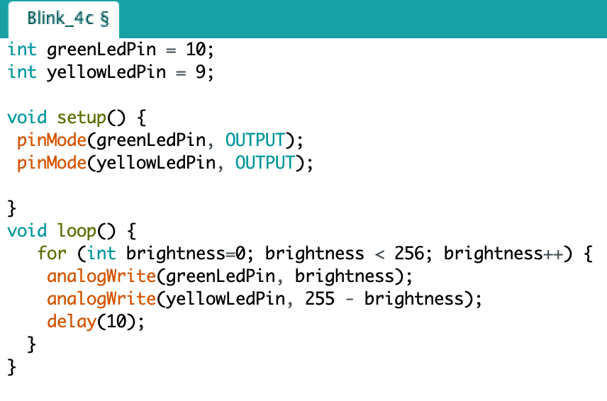
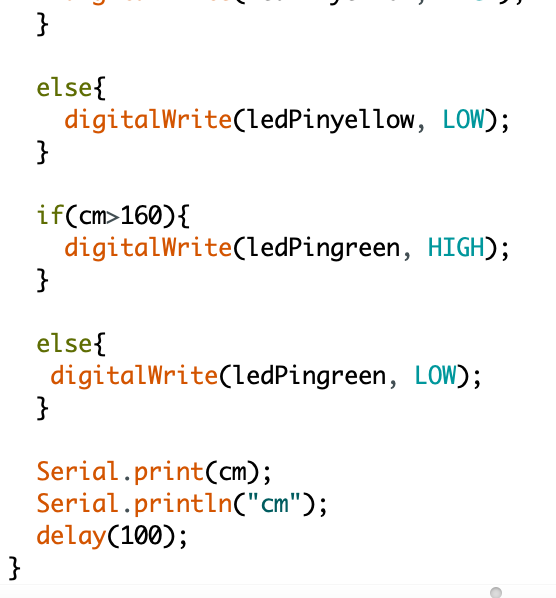

Arduino
De volgende opdrachten uit de Arduino workshop worden hierop uitgelicht: 3C, 4C, 6C, 7C, 9B, 9D, 10D, 11D, 12E, 13E, 14C, 15C.
Opdracht 3C
Bij deze opdracht was het de bedoeling om 2 LED lichtjes te laten knipperen, alleen 1 LED lichtje moest twee keer zo snel knipperen als het andere LED lichtje.
Opdracht 4C
Opdracht 4C was een vervolg van opdracht 3C. In plaats van dat het ene LED lichtje twee keer zo snel moest knipperen als het andere LED lichtje werd gevraagd om het ene LED lichtje te laten dimmen en de ander aan moest gaan. In de video is dit lastig te zien, maar na overleg met de docent Tim van den Bosch zei hij dat het goed was sinds de code wel kloppend was.
Opdracht 6C
Opdracht 6C is een herhaling van opdracht 4C, maar deze keer werd gewerkt met de potentiometer. Deze meter heeft een waarde tussen 0 en 1023 liggen en als je eraan draait veranderd de waarde. De bedoeling was dat als je aan de potentiometer draaide het ene LED lichtje aan ging en de ander ging dimmen. Vice versa als je de andere kant op draaide.
Opdracht 7C
Met opdracht 7 werd mij weer iets compleet nieuws aangeleerd: de LED-matrix. Deze LED-matrix is 8x8 in grootte en kan verschillende vormen in lichtknoppen laten zien. De opdracht vereiste dat je, met de potentiometer, kon draaien en dat er dan iets zou gebeuren op de LED-matrix. Ik koos ervoor om de eerste letter van mijn voornaam, de letter P, tevoorschijn laten komen als je aan de potentiometer draait.
Opdracht 9B
Door middel van een Piezo speaker moest ik een creatieve melodie maken en afspelen. Ik besloot het deuntje van Super Mario Bros na te maken.

Opdracht 9D
Bij deze opdracht moest ik een geluid maken als ik met mijn hand over de speaker heen zwaaide. In de video is het niet goed te zien, maar ik hield mijn hand boven de LDR sensor.
Opdracht 10D
Opdracht 10 stond in het teken van een NTC sensor. Deze sensor reageert op temperatuur. Voor de opdracht moesten we een LED lampje laten branden. Als je je de NTC vasthad verhoogde te temperatuur en ging het lampje aan.
Opdracht 11D
Voor opdracht 11 moest je een 'social distance indicator' maken met behulp van een ultrasonic sensor. Deze sensor meet afstand en voor de opdracht moest tussen drie verschillende waardes gekozen worden dat een stoplicht representeerde.
Opdracht 12E
Afgelopen opdrachten zijn gedaan in het programma 'Arduino', maar deze opdracht moest gedaan worden in combinatie met het programma 'Processing'. Via dit programma heb ik een driehoek op mijn scherm laten draaien door aan de potentiometer te draaien.
Opdracht 13E
Bij deze opdracht ging ik voor het eerst werken met knoppen (buttons). De opdracht hield in dat als je op de button klikte het LED-lampje uitging als deze aanstond en vice versa.
Opdracht 14C
De servometer werd uitgelicht in deze opdracht. Een servometer is een motor die erg precies kan draaien. Volgens de opdracht moest de servometer draaien aan de hand van de draaing van een potentiometer.
Opdracht 15C
De laatste opdracht, opdracht 15, stond in het teken van het maken van een piano op een interessante manier. Dit werd gedaan aan de hand van sensoren, de piezo speaker en een ander object dat kan geleiden naar keuze. Ik koos voor tomaten, omdat dat het enige fruit was dat nog beneden lag. Op het moment dat je één van de zes bananen aanraakte hoorde je een ander deuntje. Ik heb uiteindelijk een tomatenpiano gemaakt.
Reflectie